AVISO: Essa página está INCOMPLETA! Estarei a atualizando com o tempo (e quando eu não estiver com preguiça xd)

Que celebração foi essa??
Olha, aqui tiveram muitos lançamentos fortes, é bem impressionante, celebração muito boa
 & #18 (Future)")
E simplesmente estavam no top 10.
Eu não sei quem teve a ideia dos androides do futuro serem um top 10 cards mais incríveis mas essa pessoa merece um aumento, esse card é insano
Eles tem 170% de ATK e 180% de DEF sendo UM CARD DE NUKE E ORB CHANGE
Só isso deixa eles bem desbalanceados já que ter algum stat no começo do turno +nukar é bem brabo, e é um valor bem alto, pegando orbs TEQ eles ganham 35% de ATK e DEF por orb, só 3 orbs já é MUITA COISA
Caso não peguem orbs TEQ ainda é até decente, 17% de ATK e 18% de DEF (eu gosto de como a defesa nesse card é sempre 1% maior q o ataque)
O maior objetivo é pegar 8 orbs com eles, já que com isso eles ganham em cima de tudo ainda 70% de ATK e 80% de DEF, se for calcular basicamente, eles com 8 orbs tão aumentando a DEF em 180% + 360%, ISSO com os 30% q eles ainda ganham no super attack, é muito número cara
Se a capacidade defensiva deles ainda não foi o bastante, eles ainda tem uma das habilidades mais quebradas de todas que é nulificar TODOS os supers de Ki do jogo, e é isso, 0 de dano sempre
Claro, isso tem uma condição de vida, mas uma condição bem humilde, acima de 35% de HP, e ainda, se estiverem abaixo de 35% eles ao invés da nulificação tem um super adicional garantido, só ajudando mais na defesa
Agora, a parte mais desbalanceada do card que já é desbalanceado: a active que faz o card atemporal, eles nunca vão perder o valor por essa active
A active simplesmente é um ghost usher grátis, sem nenhuma condição praticamente, vc literalmente pode ativar isso no turno 1 e só impedir o boss completamente de fazer qualquer coisa, quando que isso vai ser inútil? Nunca.
E o cara que fez o design deles precisa desse aumento, pq o cara pediu pra darem simplesmente uma das melhores osts desse jogo inteiro pra eles numa active onde nada acontece além de conversa
Contemple:
Eu tenho que admitir que amo o design desse card, queria muito que outros dokkan fests tivessem sido tão bons quanto eles foram.

O suporte mais básico de androids:
Esses caras são muito insanos também, não só por eles serem o único suporte decente pra androids, mas tmb pela utilidade nas lutas
Diferente do 17 e 18, eles não nulificam supers de ki, e sim absorvem eles, transformando em vida grátis
E esse card linka 4/7 links com eles, ou seja, vc pode dar 40% de ATK e DEF grátis pra um card já muito forte, e assim vc tem 2 slots invencíveis contra supers de ki, e um deles ainda te cura gratuitamente, dá pra pedir um suporte melhor?
Por sinal, uma coisinha, caindo abaixo de 39% de HP vc tem um scouter tmb, então vc pode saber exatamente onde colocar esses caras e curar vida
No geral, belíssimo card.
 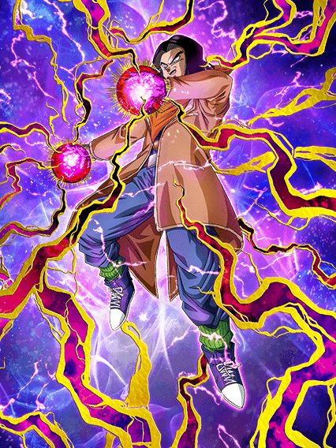
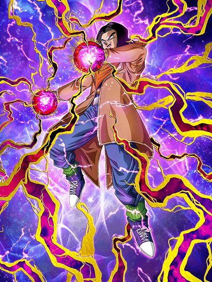
Eh.
Coloquei os dois juntos pq eles são literalmente o mesmo card, eles fazem a mesma coisa
Suporte de 25% de ATK e DEF x2, o 17 do inferno tem 290% de ATK e 240% de DEF e o 17 normal só inverte o ATK e a DEF, e é literalmente só isso
No geral os dois são bem meeehh por não terem nada de diferencial, além de serem uma cópia um do outro (é canon? É, MAS NÃO PRECISAVA TAR ASSIM AQUI)

Foi interessante.
Pessoalmente essa foi a celebração em q eu voltei a jogar depois de uma pausa, então foi até legal, o conteúdo foi decente.
Pena q o maior problema foram os próprios cards..
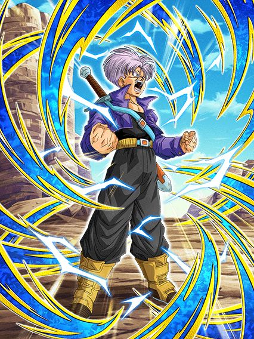
Eu diria que esse card foi um dos primordiais pra kits bizarros, desconexos e sem sentido.
Trunks.. seria este o mestre dos ataques básicos adicionais?
Esse cara é triste, ele só tem 200% de ATK e DEF e mais da metade da passiva dele são 2 adicionais que nem é listado se podem ou não ser supers e um adicional de 70% de ser super depois de ele atacar 3 vezes
Vamos considerar muito que esses adicionais sejam supers.. então o trunks tem chance de lançar 4 supers, cada um aumentando 30% de DEF no turno e um possível quinto super pelo hidden potential, olhando assim, qual a melhor coisa q vc pode colocar pra maximizar o dano dele?
Se vc pensou crítico, vc PENSOU ERRADO!
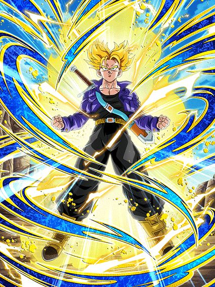
Reza a lenda da tela de KO do trunks.
Bom, vamo lá, pelo menos as condições de transformação não são muito horríveis, atacar 6 vezes até vai pq ele tem bastante adicional
Mas MEU AMIGO, que kit contraditório ein, pq o trunks literalmente no turno da transformação tem crítico garantido e nos turnos seguintes 70% de chance de critar, e agora, oq faz com o hidden potential?
Uma pena q esse crítico e blá blá blá é só metade da passiva e a outra metade é coisa inútil que ele ganha debuffando o inimigo, coisa que não faz sentido nenhum pq bosses grandes não podem ser debuffados e esse cara nem numa battle road dá pra levar pq lá ele não vai conseguir transformar a tempo 💀💀
É triste pq as animações dele são muito lindas, a ost é muito boa e ele tem mesmo uma tela de KO minimamente impossível de pegar mas hey a gente considera né
Enfim, um lançamento bem fraco que podia ser melhor se ele não fosse tão contraditório e estranho, se ele focasse só em crítico ou só adicional seria tão mais fácil..
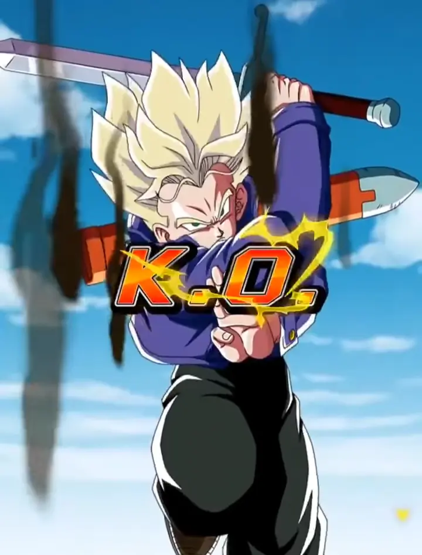
ESSA TELA DE KO É BOA DEMAIS MANO
Pq ele tinha q ser mid..?
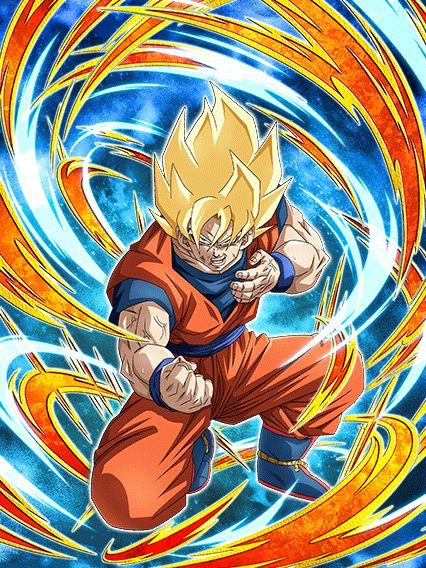
Um dos primeiros casos de "card secundário melhor q o dokkan fest" eu diria.
Esse cara não ironicamente é bem útil e ajuda muito em battle roads, ele é facilmente melhor q o trunks em quase qualquer aspecto kkkkk
Esse cara tem 300% de ATK e DEF e stacka 50% de ATK no super, isso já é bem mais decente e útil, mesmo que o dano dele não seja extremamente o melhor de todos
E aí vem a parte quebrada, esse cara é muito forte nos primeiros 5 turnos, já q ele tem 59% de chance de critar, 59% de chance de adicional E 59% de redução de dano
Tipo, é limitado a turnos? É.
Mas nesses primeiros 5 turnos ele consegue se segurar tranquilo contra a maioria dos bosses, é bem impressionante já q ele foi lançado antes do aniversário e tudo mais
Por sinal depois desse "buff de entrada" dele, ele ainda ganha 59% de DEF e mantém a redução de dano se sua vida estiver abaixo de 59% (meu Deus é muito 59)
Enfim, a parte mais chata dele é ele ter 50% de chance de perder 7% de HP a cada super, oq é triste já q vc quer stackar, mas não é algo tão horrível assim pelo menos, é um bom card.
")
Dbs na celebração do Z não é meio estranho?
Esse cara é bem simples, ou vc tá enfrentando 2 inimigos ou mais, ou vc não leva ele no time
E mesmo assim, reconsidere levar ele pq ele nem é bom assim
Esse cara tem 160% de ATK e DEF contra 1 inimigo, mas contra 2 ele tem menos ATK mas 240% de DEF e 30% de chance de defesa ativa, oq é horrível podre
Acho q já deu pra entender esse cara.

O tão falado "deus imortal" que ganha buffs quando perde HP?
O zamasu ficou bem estranho com esse eza, ele tem uma passiva com valores super baixos, ganha buffs quando tá com menos de 90% de HP q não faz nenhum sentido e ganha mais alguns buffs quando o inimigo tá debuffado, oq torna ele inútil e ainda pior que o trunks, que tristeza ein.
")
Não consigo não olhar pra essa arte e não pensar "2018 vibes."
Esse cara é minimamente interessante se vc estiver enfrentando um inimigo wicked bloodline, já q aí ele tem bastante Ki e dá crítico garantido, oq é mais ou menos já q ele tem 50% de chance de critar já na passiva mas tá ali
No geral, números bem baixos e nada de muito impressionante no fim das contas, podia ter sido melhor viu
Mais um pra colecionar e nada mais..
") 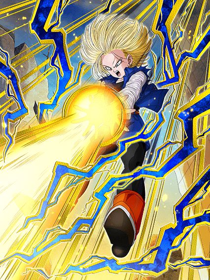
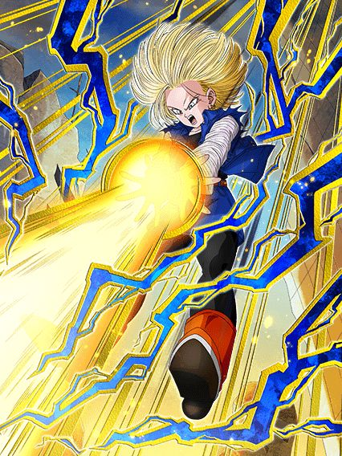
Duplinha F2P interessante.
Falar dos 2 de uma vez pq é literalmente impossível usar eles separados, é suicídio, eles não tem kit se não estiverem juntos
Mas enfim, os dois são semi nukers com mínimas diferenças, sendo a maior de todas o 17 ganhar mais ATK e DEF com orbs normais e a 18 só com rainbow orbs (coisa q limita ela muito mas ehh)
Esse problema aí é recompensado por a 18 ter 30% de chance de desvio enquanto o 17 tem 30% de crítico, no caso os dois são horríveis mas olha é melhor que nada
Eles tmb lançam um super adicional garantido se tiver um inimigo hybrid saiyan ou earthlings, oq é bem raro de ser ver em card F2P e é útil já que ambos stackam 50% de ATK e 20% de DEF no super
No geral do geral, bem decentes.
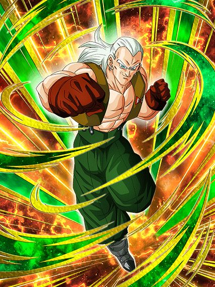 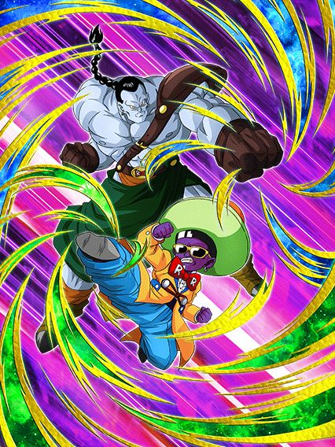
Huh.
Mais 2 cards que é melhor usar juntos pelo bem da sua sanidade, e até que o android 13 não é nada mal, ele tem 40% de redução de dano, stacka 20% de ATK e DEF no super, no geral bem decente
Sim ele precisa de um inimigo goku, vegeta, trunks ou piccolo pra ter metade da passiva? É, mas fazer o que né
O 14 e 15 tem um dano bem meh, uma defesa mid mas tem scouter permanente contanto que o android 13 esteja com eles e infelizmente eles são estranhos, já que eles dão suporte e ganham 30% de redução de dano, mas só se tiverem do lado de um personagem Android 13 fusão, não pode ser ele normal, oq não faz nenhum sentido, e o buff do scouter é só com um parceiro chamado Android 13 tmb, não que inclua Android 13 no nome, então eu realmente esqueci de sabar a lógica.
")
Se ele tivesse um pouco mais..
Aproveitar a chance pra dizer que ESSE CARA merece um dokkan fest, esse momento é bom demais cara
Enfim, o trunks não é o pior F2P de todos ou algo assim mas ele realmente precisava de mais umas 2 linhas de kit pra ajudar ele com alguma coisa
Ele tem 40% de ATK e DEF no turno, ganha mais 40% no super e é isso q ele tem no turno 1, a não ser q vc esteja contra 2 ou mais inimigos, aí ele tem mais 40% 💀
Já deu pra entender né? Não dá pra tankar nada com só isso de passiva
Acho q o mais triste foi terem a chance de fazer oq quiserem com o eza dele e decidiram dar uma mecânica de final blow que dá mais 40% de ATK e DEF, agora me diz, que boss que o trunks vai matar com 80% de ATK e DEF da passiva toda?
Acho q o que sobrou foi a arte dele ser bem maneira e ele ser um dos prime battle mais fácil de farmar
Pena q só fica pra coleção..

O melhor aniversário.
O sétimo aniversário foi praticamente um reboot em tudo q considerávamos normal no dokkan, introduzindo as red zones como novo conteúdo difícil, as leader skills de 200%, intros nos cards, múltiplas actives, as novas osts de menu feitas só pro aniversário...
Foi facilmente a celebracão mais especial na história do jogo e não tem nem oq dizer, vai ficar marcada pra história.
Por que os gods são tão bons? Acho que isso é óbvio.
Além deles terem uma incrível leader skill que engloba os personagens mais fortes do jogo, eles tem ótimas
categorias fazendo com que eles fiquem em times muito bons, mas ai vc me diz: “Ah mas nem só de categoria vive um
personagem.”, beleza, então vamos falar sobre seu kit:
Antes de transformar, os gods tem um stack de ATK e DEF de 20% em seus supers, sendo assim, quanto mais supers vc
der antes de transformar, mais forte eles vão estar quanto transformarem, mas claro se você tiver 5 neurônios vc já
deve saber disso.
Então vamos falar sobre sua passiva: Assim que eles entrarem no turno, vai começar a animação de entrada que é uma
cereja no bolo, então no primeiro turno eles vão ter guarda ativa por 1 turno que é algo muito bom porque como eles
precisam stackar para ficar mais forte, no primeiro turno eles estariam muito frágeis mas com essa guarda ativa eles
se mantêm no primeiro turno.
Eles começam com 120% de ATK e DEF, e ganham 7% de chance de critico por rainbow orb obtida, e o mais incrível é q
eles dão um super ataque adicional garantido quando estão com 20 ou mais de ki, isso é algo muito bom já que eles
stackam, então eles podem acabar dando ate 3 supers no turno fazendo com que eles ganhem 60% de ATK e DEF.
E eles vão ganhar ki +1 por ki sphere obtida e vão ganhar um aumento de ATK e DEF de 77% por 7 turnos desde o
início, então é mais um buff que eles ganham no começo da batalha que é algo muito bom.
E eles ainda ganham ataques efetivos quando estão com 24 de ki e fica muito fácil para eles darem o super adicional
ou pegar o dano efetivo porque eles vão ganhar ki +2 por ki sphere obtida por 7 turnos e depois desses turnos eles
ainda vão ganhar ki +1 por ki sphere.
Eles podem usar a ativa apartir do 4º turno.

Quando você transformar os gods você vai ouvir uma das melhores OST do jogo
Mas deixando o "TRUTRUT PAPAPAPANNNNNPAPAAPNNNNNNNNN" (esse é meu despertador por sinal) de lado vamos falar do seu
novo kit, quando transformados, o ultra super attack vai desabilitar uma ação do inimigo.
Eles ganham 177% de ataque e defesa e vão ganhar ki +2 por ki sphere obtida, chance de critico e chance de desviar
+7% por rainbow orb obtida, ataques efetivos quando estão com 16 ou mais de ki, lança um super adicional quando
estão com 20 ou mais de ki e quanto mais supers, mais dano, então se você stackou bem antes de transformar, esse
card vai dar muito dano.
A active.

Pode ser ativada quando o seu HP ou do inimigo estiver em 50% ou menos, causa ultimate damage ao inimigo e todos os
ataques se tornam críticos.
Então, essa ativa é muito boa para dar muito dano cara, se vc tiver com 1 milhão de ataque que não é algo difícil
(eu to escolhendo um número baixo e se usar a ativa), você vai ganhar um aumento de 550% que vai ser 5.500.000 mais
os 1.000.000 então vc vai dar aí uns 6.500.000 de dano mais todos os seus ataques no turno que vão ser crítico
fazendo com que todos os ataques ganhem um multiplicador de 1,9 então vc vai dar quase o dobro do dano nos seus
ataques, então você vai destruir qualquer boss no turno da sua ativa.
- By Dollyinho
Bom, ele não faz nada.
Esse cara é realmente um completo inútil
Literalmente metade do kit dele quer q ele pegue 6 orbs mas ele não é orb changer de NADA, não dá suporte, não tanka, não dá dano, qual era o objetivo desse cara? Pq ajudar os gods que não era.
Tudo bem guys, ele tem uma incrível mecânica de final blow onde ele cura 26% de HP, muito fácil fazer isso com um card q não dá dano, boa sorte :)

Os macacos, vulgo os melhores personagens da categoria gt heroes.
A leader skill deles é a melhor para a categoria de gt heroes e com ela dá pra fazer uns times bem quebrados, são
ótimos parceiros de link skills. O super e ultra deles é bem roubado, deixando eles stackarem um pouco de def e
stackam atk pra caramba.
Na sua passiva temos 77% de atk e def por 7 turnos, 120% de atk e def, chance de crítico aumentada por cada rainbow
orb pega, adicional garantido com mais de 20 de ki, dá dano efetivo em qualquer inimigo se tiver pego mais de 24 de
ki e ganham o dobro de ki por cada orb que você pega.
A partir do 4º turno você pode ativar a fusão, onde tem uma animação incrível e uma linda ost.

A passiva do gogeta é bem quebrada, contando com +177% de ATK e DEF, +2 de ki por orb pega, +7% de chance de reduzir
o dano por cada rainbow orb pega, ataque efetivo em qualquer inimigo, 30% de chance de dar um critico, 50% de dar um
adicional e 50% de chance de counterar um super de inimigo.
Seu super e ultra são as melhores animações do jogo e também aumentam o ATK e DEF por turno.

Por fim temos a sua active skill, que é L I T E R A L M E N T E a melhor animação do jogo inteiro e
a melhor ost, pra ativar ela ou você ou o inimigo tem que estar com menos da metade da vida e quando ativada causa
um dano critico imenso e se o inimigo não morrer ele ainda dá critico garantido pra todos os outro golpes no turno.
- By Auã
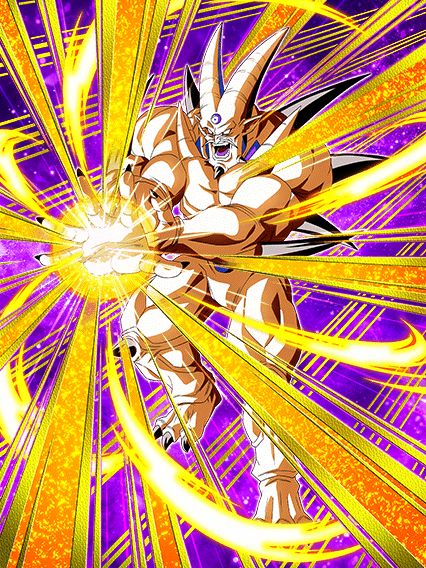
Gt bosses..?
Não ironicamente esse cara seria bom se o time dele não fosse morto, já q ele tem coisas boas no kit mas ele tá meio q sozinho 💀
Ele se resume a pegar 7 orbs, já que ele só tem 100% de ATK e DEF e vai pegando buffs a cada orb
Resumindo, quando vc pega 7 vc tem 220% de ATK e DEF a mais, 50% de chance de dar um super adicional e 50% de chance de crítico, oq é bem decente e ele tem big bad bosses, uma pena q de novo, gt bosses não tem nem um líder 150% em anos de jogo..

No dia q fizerem alguém parecido com esse cara, o dokkan treme.
Um eza simples mas eficaz, o gogeta tem uns números legais ali e tem 50% de ser efetivo contra tudo oq é estranho mas nada de horrível
Ele tem uma mecânica q infelizmente é uma falha q é "buildar" entre bastante aspas 25% de ATK e DEF por super feito até 50%, mas isso dura só 5 turnos oq significa q se vc não pegar um super adicional vc vai basicamente nunca ver a passiva completa do gogeta
Mas tudo se compensa com a simples mecânica mais absurda de todas: 70% DE CHANCE DE COUNTERAR TUDO
Esse cara simplesmente tem 70% de chance de ignorar todos os bosses do jogo, isso é completamente desbalanceado, 70%, mesmo que com suas falhas, é bem alto, esse gogeta praticamente não consegue ser acertado por supers
Uma pena q eles olharam demais o counter e esqueceram do resto do kit..

QUE LENDA MEUS AMIGOS, QUE LENDA.
Esse eza carregou o aniversário inteiro, sejamos honestos, a red zone de filmes foi possivel ser feita por causa dele
O kit dele é fácil de explicar: pegue 2 rainbow orb e largue esse cara no slot 1, talvez nem precise dos orb.
Esse cara é orb changer, linka super bem com os gods (sendo o perfeito slot 1 pra eles) e pegando 2 rainbow orb vc ganha 77% de ATK e DEF, mas oq só importa realmente são os 77% DE REDUÇÃO DE DANO contra movie bosses or pure saiyans, que adivinha só, era a red zone movies inteira
Sendo praticamente invencível em tudo lá, o goku god serviu como o slot 1 perfeito, completamente quebrado e tankando tudo sem dificuldade
E eventualmente, esse cara ainda ajudaria na red zone wicked bloodline, na red zone da red ribbon E no evento do cell max, mas lá ele já tava mostrando alguns sinais de falha pq a redução de dano ajuda mas não em cima de uma defesa relativamente baixa
Em resumo esse cara é bem inútil se não estiver com a redução de dano, ele até dá um dano decente mas esse não é o papel dele, então é, ative a redução de dano e seja feliz.

É esse o tal do aniversário?
Pessoalmente eu acho um completo desrespeito que a celebração mais importante da história do dokkan seja entre o aniversário e a celebração de downloads, como ousam profanar tamanha desconsideração com o card que finalmente superou o Gogeta STR?

É ele, o rei das letras minúsculas.
GRANDIOSO RADITZ, o homem, o mito, a lenda
Eu sei que nem preciso falar desse cara pq todo mundo já conhece o melhor card do jogo, mas vamo lá né
Pra começo de conversa, o raditz é um card, então vc já vê q ele tá em outro nível, até pq ele não só é um card, mas ele tmb é um card que foi lançado, e isso aconteceu em 2022 ein, fica ligado
Agora por favor segure suas lágrimas, eu sei q vc já se emocionou, mas eu irei descrever detalhadamente tudo que o raditz tem
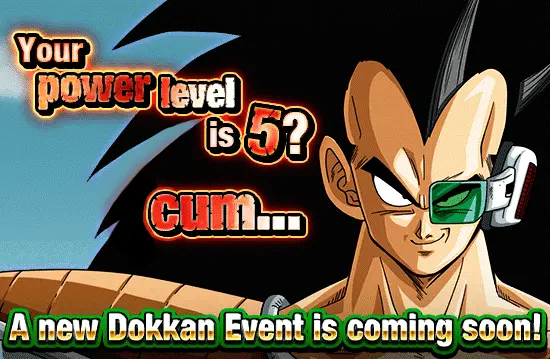
O [Unveiling of Power] raditz phy tem: Um nome, uma cor, uma classe (que é extreme, assustador), tem uma arte, tem efeitos na arte, um sticker na arte, um título SÓ DELE ein, e isso é o começo..
Sei que é demais já, mas ele tmb tem: Uma passiva, um super attack, links, categorias, uma leader skill, e vc acha que acabou? Não kkkkkkk, ESSE CARA, tem uma incrível active skill, oq mais vc poderia pedir de um card????
Pensa, o raditz só não tem uma intro, pq sabiam que seria demais e nossas mentes não conseguiriam compreender tamanha grandiosidade.

Sobre a sua habilidade passiva "Raditz's Enforcement", o [Unveiling of Power] raditz phy tem 150% de ATK e DEF, o que não faz sentido já que infinito multiplicado por qualquer coisa é infinito
Ele também faz algo novo: ele aumenta seu ATK e DEF novamente simplesmente fazendo um super attack!! Onde mais vc vai achar um card com buffs tão fáceis?? Por sinal esse buff só é ativado se tiver 1 inimigo, até pq todos os outros tremeriam de medo dele e quitariam da partida
Pra ter uma passiva ainda mais completa, o [Unveiling of Power] raditz phy dá crítico garantido se ele tomar um golpe, só pra humilhar o oponente por tentar encostar nele
E pra finalizar, ele ainda ganha um esplêndido, incrível, fantástico KI+2 quando matar um inimigo, que sempre acontece já q ele respira e todo mundo morre né
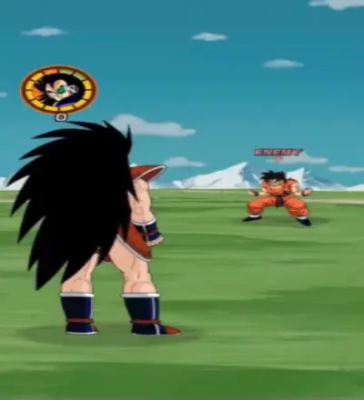
O [Unveiling of Power] raditz phy tem um super attack que ataca todos os inimigos de uma vez.
"Mas ele não só ganha buffs se estiver contra um inimigo apenas?", irão sempre fazer essa pergunta, ignore, o [Unveiling of Power] raditz phy não precisa disso.
Caso algum inimigo ouse te atacar 3 vezes, você pode usar a insana active skill que dá 0 de dano em tudo, simplesmente quebrado
Já se tornou claro que o [Unveiling of Power] raditz phy é certamente, indubitavelmente, incontestavelmente, sem nenhuma sombra de dúvidas, um card que foi lançado.
"Preciso falar mais sobre esse personagem? Meu mano é simplesmente perfeito em todos os aspectos, ele é ótimo líder para qualquer categoria, as diferentes passivas dele são úteis em qualquer evento, seja fácil ao mais difícil, ele arrebenta em qualquer evento, é simples assim, o Zamasu sente medo dele, sem falar no dano dele que é absurdo, a cada crítico é um hit kill diferente, Dokkan nunca vai superar esse personagem."
- By Teagores
"O Raditz phy (Irmão de Goku) (filho de Bardock) (filho da mãe do Goku) (tio de Gohan) é um personagem incrível afinal ele é o único personagem que não tem dano e nem defesa e eu achei isso muito criativo realmente a akatsuki se superou para fazer esse personagem, então O Raditz phy (Irmão de Goku) (filho de Bardock)(filho da mãe do Goku) (tio de Gohan) é sim um personagem."
- By Dollyinho
"Raditz phy é um personagem que obviamente faz parte da família do Goku. E olha que bacana, ele tem ataque em área, que faz ele ser usável num World Tournament."
- By Auã
Agradeço as participações especiais, o raditz merece.

Ih alá lançaram 2 dokkan fests juntos sem quere-
Nappa STR, o card secundário que eu irei discretamente proclamar o card secundário que é melhor q o principal
Esse cara é um tank suporte interessante, ele por algum motivo tem 780% de DEF, oq parece muito mas não é por causa dos stats dele
Ele dá os básicos 30% de ATK e DEF pra Saiyan Saga (acho q ele é o primeiro suporte da incrível categoriakkk) e tem um dano bem medíocre que aumenta um pouco se estiver enfrentando um inimigo apenas
O legal desse cara é ele ter uma active skill onde ele planta um saibaiman que debuffa legal o inimigo, apesar de ter uma condição muito horrível de levar 6 ataques pra usar
Felizmente essa active tmb pode ser usada se tiverem 3 inimigos ou mais, então é, útil em super batte roads, não poderia se esperar mais de um saiyajin que veio no banner do nosso salvador [Unveiling of Power] raditz phy
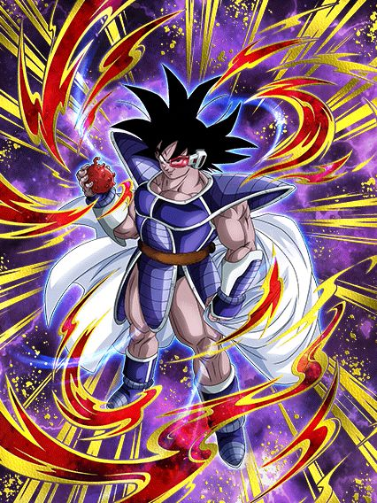
Um raríssimo suporte pra extreme class.
Esse cara é super simples, ele não tem o melhor dano ou melhor defesa nem nada, só um suporte muito bom pra qualquer vilão do jogo, 3 de KI, 40% de ATK e se tiver um inimigo super class ele dá 40% de DEF também
Lógico, a defesa dele ser meio medíocre atrapalha ele mas como o trabalho dele é ser um suporte, é justo
Ele tem uma transformação temporária com uma condição horrível de ter 30% de chance de se transformar caso esteja abaixo de 80% de HP, sem comentários do quão horrível isso é.
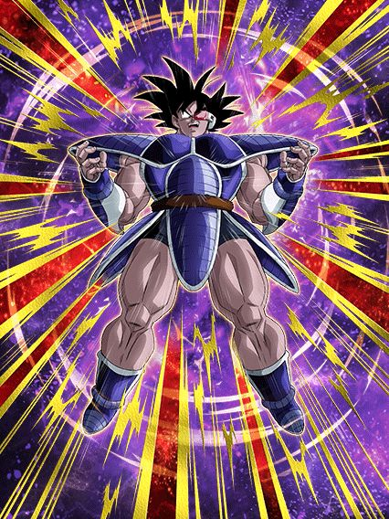
Ele perde o suporte e vira um personagem mid.
Ele fica assim só por 3 turnos, é, mas pô mais dano e defesa em troca do suporte.. não sei não
Acho q o legal é ele curar 20% de HP quando se transforma, isso é maneiro pelo menos
Ele tmb stacka 20% de ATK e DEF nos supers dessa forma, não sei pq, não ajuda demais não mas tá ali né
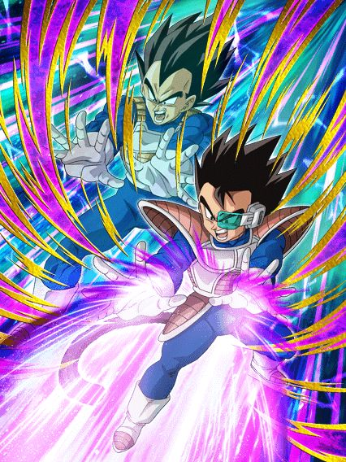
Acho q esse é o único card com 40% de chance de desvio do jogo inteiro.
Um orb changer e suporte pra Siblings Bond, achei maneiro tá? É uma opção boa pra um timezinho de Vegeta Family
Mas é, tirando esse desvio aí, o dano e defesa desse rapaz são baixos, cuidado.
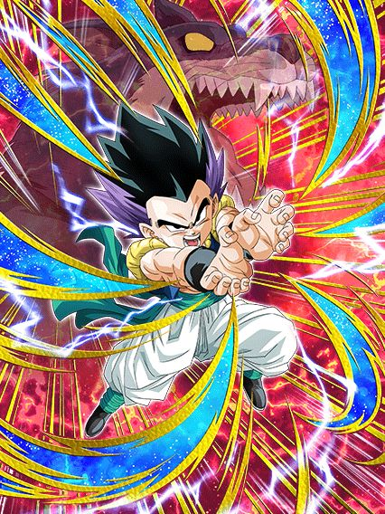
Certamente é um F2P.
O super dele tem uma animação legal e tals mass.. é complicado viu
A gente já tá num ponto onde personagens F2P não tem como competir com os cards de summon em questão de dano, é por isso q cards F2P que dão dano e nada mais não ajudam
Esse cara por exemplo, só tem um monte de ATK e DEF e 30% de chance de lançar um adicional, cabou a passiva
Sei lá, eles tem q dar uma repensada nos cards F2P pq cards como esse tem praticamente zero utilidade
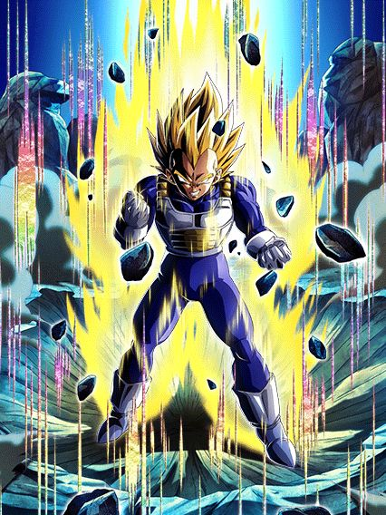
Como eu amo juntar 777 medalhas pra um personagem mid.
Esse cara lança 2 adicionais com 10% DE CHANCE DE SEREM SUPERS, nada a declarar.
A defesa dele até pode ser decente pós super, mas é, esse cara infelizmente não ajuda muito a categoria não, triste, pq eu amo a arte dele
A melhor celebração de downloads de todas.
Essa foi facilmente a melhor celebração do ano, e nas top 3 melhores celebrações da história desse jogo, tudo foi insano do começo ao fim
Eventos, cards, tudo estava num hype insano, isso junto ao memes claro, eu amei essa época do jogo.
KKKKKKKKKKKKKKKKKKKKKKKKKKKKKKKKKKKKK se ferrar mano
Não tem competição, o marketing da celebração de downloads foi simplesmente genial, o rap não é ruim, na verdade ele gruda fácil na mente e é hilário ao mesmo tempo
Nada vai superar chegar na escola e cantar com os manos "COOLA COOLA FREEZA NO BROTHA" como um bando de esquizofrênicos tá?
Literalmente ninguém esperava isso e foi incrível um rap do cooler ser a primeira coisa da celebração
Fato extra a mencionar: Na conta oficial do twitter do dokkan, o rap só tá disponível pra ver se vc estiver no japão ou obviamente usar uma VPN, oq é meio aleatório mas no momento q alguém descobriu, o negócio estourou fácil.
Eu amo esse video, de coração
Obrigado dokkan.
")
ADICIONAIS.
TODOS ELES.
Esse mano tornou os vilões usáveis outra vez e ele por si só é um card extremamente divertido de jogar, eu amo usar ele toda vez q é possível
Acho q o mais engraçado é o cooler não ter um kit extremamente complexo mas q é muito forte e divertido, já q ele se resume a atacar 1 bilhão de vezes e ele faz isso já
Pra começar ele tem uma intro incrível com uma condição legitimamente fácil de ter outro terrifying conquerors no time, isso junto com 1 adicional a mais
E ele vai precisar de adicionais, já que além dos 100% de ATK e DEF q ele tem de base ele ganha mais 100% só que de 10 em 10 a cada ataque feito
Pode até parecer muito, mas não é, pq o cooler lança pelo menos 3 ataques por turno e com a intro, 4 (se quiser contar o hidden potential, 5, isso já é metade buildado em 1 turno)
Depois de 10 ataques, ele ainda lança um super adicional garantido, e pra esse cara, supers adicionais são a salvação pq cada super aumenta 50% de DEF no turno, isso com big bad bosses.. rapaz
Aí vc pode até pensar "ok ele ataca bastante mas o dano é bom?", mas eu lhe respondo que com certeza, já que pra garantir que ele fosse bem balanceado, esse cara STACKA ATK no ultra super attack, então é, além de todo o build atacando, esse cara ainda stacka, dá pra pedir mais de um personagem?
Dá sim.

A active do cooler é a literal nuke, depois de vc stackar sei lá quantas vezes vc mandar uma supernova absurda com uma animação linda e uma ost maravilhosa.. realmente um dos cards mais brabos do ano
Lógico, o cooler é 100% baseado no rng pra vc dar sorte nos adicionais, mas se rolar, vc cozinha muito slk

O CARD MAIS GENTE BOA DESSE JOGO.
O piccolo str revolucionou o que a gente considerava normal pra suportes, além de ter sido o primeiro de muitos piccolos bons que viriam no futuro
E não tem como, esse cara funciona em qualquer time, ele é genial
O cara simplesmente tem defesa ativa, 200% de ATK e DEF no começo do turno e tem 15% de redução de dano por movie heroes na rotação PQ SIM, ELE PODE
Ele tmb ganha 50% de ATK e DEF a mais quando leva 1 golpe, além de 30% de chance de critar q não é muito oooomaga já q ele não dá tanto dano assim
O piccolo é tudo q vc poderia pedir num suporte, já q ele é um tank muito bom, e ainda dá ki e 30% de ATK e DEF pra todo mundo sem complicação ou condições horríveis
Ele tmb tem 50% de ATK e DEF contra apenas 1 inimigo e caso tenham mais de 1 ele substitui por 100% de DEF mas isso não é insanamente relevante
Em resumo, palavras não são o bastante pra descrever o quão incrível é o piccolo, o cara simplesmente é o suporte mais gente boa de todos e eu continuo amando jogar ele em qualquer time e ele cozinhar sempre
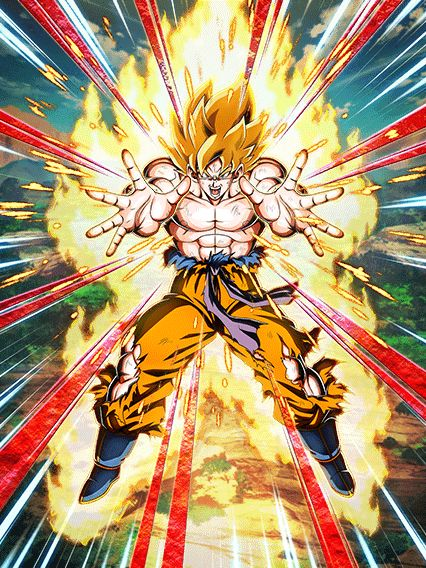
THE GOAT.
O primeiro LR carnival de todos e eu devo dizer que ele foi muito bem introduzido, sendo o primeiro lider direto 200% pra powerful comeback, animações lindas, kit muito forte e osts que eu irei falar mais depois..
Sobre o goku, ele é um card "oposto" ao cooler, já que enquanto o cooler é uma máquina de dano implacável, esse cara é um tank insano desbalanceado
Bom, esse cara stacka DEF, já começa aí a zueira pq a defesa dele já é alta, então eles decidiram colocar nele um buff de 59% de DEF quando ele leva um ataque por turno, ou seja, não dá pra ver no turno, mas se vc tem uns 300 e poucos mil de defesa, depois de tomar um ataque vc já tá na casa dos 500k
Ele tmb builda 5 de Ki e 59% de ATK com 6 golpes, oq é bem decente e é necessário ele tomar esses golpes pra dar uns 7 ou 8 milhões de dano, por sinal, quando ele leva um ataque, além do buff de DEF ele fica efetivo contra tudo, então aproveite
E aí vem a melhor parte, esse cara tem a mecânica de defesa ativa mais decente possivel, já que acima de 60% de HP vc tem defesa ativa (lembrando todos os buffs defensivos mencionados antes), e caso esteja abaixo de 60%, o goku perde a defesa ativa de propósito, pois essa é a mesma condição pro revive dele que é simplesmente inexplicável, animação incrível e a ost que foi a melhor do jogo por um bom tempo
Essa animação tá em outro nivel, e o compositor do dokkan cozinhou tudo nessa ost, é absurdo um negócio desse slk
Enfim, pós-revive vc ganha MAIS buffs, já que agora sua defesa ativa é permanente, ou seja, sem mais fraqueza, e agora o goku tem 50% de chance de crítico, oq significa q ele levar um ataque pra ficar efetivo não é obrigatório mais
É meio óbvio q a posição desse goku é ficar no slot 1 sempre, torcer pra não levar um super turno 1 slot 1 pra ele stackar um pouco e sempre levar 1 golpe pra defesa extra, e no geral tentar guardar o revive pra hora certa
Mas não acaba por aí.. pq esse cara ainda tem uma active depois de reviver

Essa active é uma coisa, tipo, ela dá um dano legal se critar mas pô, animação meio feia, q por sinal fica muito zuada se o boss for maior q o goku, pelo menos a ost e a tela de K.O são incríveis de qualquer jeito, e infelizmente ela tem a maldição de quebrar 1 ataque inimigo no começo, só que por algum motivo os bosses amam ser trolls e dar um super no segundo ataque ao invés do primeiro pra q vc fique uma caveira viva
Enfim, eu amo esse card, meu mano me carregou pela red zone inteira slk
Não bastou 1, precisávamos da continuação.
Pessoalmente, eu prefiro o primeiro, mas esse é muito bom também e não tem como, o "coola coola freeza no brotha" é bom demais pra não ser repetido
Eu ainda fico estupefato com isso, o marketing pra celebração foi não só 1, mas 2 raps
Eu até agradeceria o autor não sabendo quem é, mas felizmente tempos depois do rap ser lançado, o cantor decidiu se revelar no twitter, então é, fatos curiosos
Vc pode ir até a conta dele aqui se quiser.
E pessoalmente, os memes que vieram com esse rap não foram poucos, o metal cooler de terno é genial cara, tem como n
Oh um video de minha autoria? Obrigado a mim mesmo
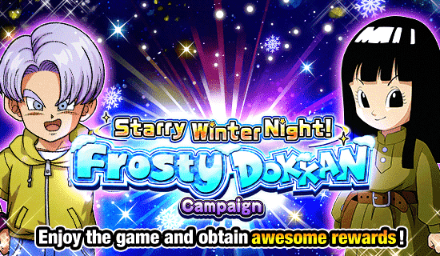
Finalmente chegou né.
Uma das celebrações mais importantes pro global, tava todo mundo esperando o vegeta e trunks, incluindo eu obviamente
")
O melhor card do jogo.
O vegeta e trunks na minha opinião são um dos melhores lançamentos do dokkan, simplesmente pq eles são mais fortes que os LRs do sétimo aniversário, mas não de um jeito que humilha eles e o resto do jogo, é como se fosse um card balanceado e desbalanceado ao mesmo tempo
Pra começo de conversa eles introduziram uma das categorias mais fortes do jogo, Bond of Parent and Child (apelidada carinhosamente para "Bonde do pai e filho"), que só incluí todos os gokus, gohans, gotens, alguns vegetas, etc etc.. se vc interagiu com seu pai, cê tá na categoria
E vamo lá, esses caras são feitos para serem o tank do time, já que eles ganham diversos buffs e tem defesa ativa se estiverem no slot 1, só isso faz eles muito absurdos defensivamente
E como se não bastasse isso, eles ainda buildam mais defesa tomando 5 golpes e stackam ATK e DEF no ultra super attack, oq faz deles AINDA MAIS tank, insano
E eu vou ser honesto, a não ser que o seu esteja rainbow, o dano deles é um pouco baixo, mesmo que eles stackem, felizmente eles tem um adicional com 30% de chance de ser super que por algum motivo sempre ativa (acho que é o adicional mais gente boa que tem no jogo) e ainda buildam um pouco de crítico tomando golpes que ajuda no dano deles também
E aí tem uma das habilidades mais desbalanceadas deles, que é a active skill
A active deles é muito forte, já que ela torna todos os ataques deles críticos no turno, dá um dano muito bom e completa buffando a DEF de todos os aliados em 20% no turno, o que é extremamente forte se tiverem outros cards que stackam no turno
Essa active deu um valor absurdo pro vegeta e trunks, já que eles não só são um tank, mas eles ajudam o time dando um suporte legal
E como se não bastasse tudo isso, ainda finalizamos com as animações e osts desse card sendo excepcionalmente lindas (tirando a animação de intro deles que é muito longa e te faz dormir)
Um mini "easter egg" desse card é o fato de eles usarem coisas do mangá aqui, já que o vegeta no ultra super attack usa o Gamma Burst Flash, exclusivo do mangá

Card lindo, forte, maravilhoso.

Sério q gastaram esse momento do black em um card secundário? 💀
Esse cara é simples, só que simples demais e isso complica ele infelizmente
Ele só tem 100% de ATK e DEF, builda mais 100% tomando 4 golpes e tem suporte, é só isso
Ele fica efetivo contra tudo depois de levar 5 ataques mas o dano dele nem é alto então não muda muita coisa
Ele é um bom card pra battlefield e basicamente nada mais, pq o suporte dele é bom, 40% de ATK e DEF pra Future Saga, mas ele se complica em times pra ativar o Big Bad Bosses dele e tals
Um card bonito, com uma proposta interessante mas infelizmente não foi o suficiente.

Para sua segurança, use um time pure saiyans.
Esse cara não é muito ruim não, ele consegue até ser decente num time full pure saiyans, já que ele é um suporte, tem um dano uhhh bom até, e ele com uma build de desvio é até usável, nada mal
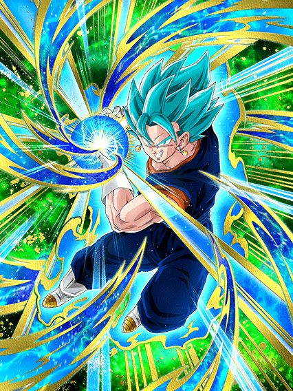
Seria este o retorno do rei dos stacks? não
Bom, o grande foco desse EZA foi buffar a defesa do Vegetto já que ela era inexistente antes, então agora ele tem 150% de DEF e ganha mais 50% quando atacar, o que é decente já que ele stacka ATK e DEF no super
Oq ferrou esse cara foi eles terem se segurado muito exatamente pq ele stacka, já que os adicionais que ele lança agora são garantidos, mas continuam tendo só 30% de chance de serem supers, e obviamente nos eventos atuais você quer ter o máximo de stacks possíveis pra tankar e dar bastante dano, mas essa chance de super adicional continuar sendo tão baixa é um problema triste
Ele podia ter sido melhor..
")
⚠ Esta análise está indisponível. Para desbloquear o acesso, dê um golpe final no boss. ⚠
Esse cara tem muita coisa interessante, ele dá um bom dano e ainda é um suporte
O suporte dele é de 50% de DEF pra extreme class, e se for um aliado Real of Gods, ainda dá mais 50% de ATK, o que é bem forte sim
Mas o que segura esse goku black são os 50% de ATK e DEF e dano efetivo que só ativam depois do goku black dar um golpe final no boss, e qualquer um sabe que a mecânica de golpe final é horrível
Esses 50% dão uma diferença considerável no dano e defesa dele, e infelizmente é muito difícil conseguir ativar isso em eventos difíceis, oq obviamente limitou ainda mais esse cara a ser usável
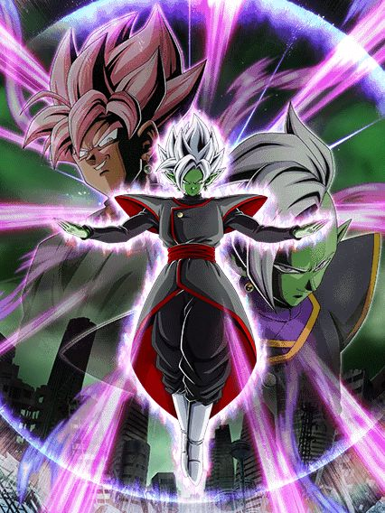
Ele tem os discursos, as osts, as animações..
Ele tem tudo.
Esse card aqui é simplesmente lindo, e falo em geral mesmo, esse é um dos cards mais lindos do dokkan
Pra começo de conversa ele tem uma intro incrível do black e zamasu se fundindo, o zamasu diz o discurso todo sobre ser a justiça e o mundo, e pra completar ainda tem uma OST super similar a OST de DBS mesmo, o que é perfeito
Sobre o kit dele em si, ele tem muita coisa interessante que podia ser melhor..
Ele tem 20% de redução de dano permanente, e ganha 2% a cada ataque q ele leva no turno num máximo de 10% (sim isso reseta a cada turno), o que sim, é uma habilidade horrível já que só depois de levar 5 ataques ele tem 30% de redução de dano que nem é tanto assim né
Pra compensar esse problema da redução de dano, ele lança um super adicional garantido se vc fizer um ultra super attack e cada super aumenta o ATK e DEF dele em 50% no turno, oq é bem útil
Ele ainda tem uns extras, como curar vida e ganhar ki depois de levar muitos golpes, e tá aí um grande problema do zamasu, ele precisa levar um monte de ataque pra buildar uma passiva legal e nem sempre vai dar tempo de fazer tudo isso
Ele também tem 70% de chance de counterar supers desarmados, oq é extremamente raro, cê vai ver isso 1 vez e depois vai ver de novo em uns 5 anos
E pra completar ele tem uma active que infelizmente só dá dano, e tem uma condição meio paia de ter que dar 5 supers, mas não é ruim, e animação e OST dessa active são muito boas
Bom, tendo dito as coisas boas e problemas do zamasu, só faltou dizer o melhor, que é a arte dele, já que ela é uma obra de arte pura, effects lindos, o black e o zamasu no fundo, é muito lindo, e você simplesmente vê isso depois de alguns segundos

Essa é basicamente a visão dos sobreviventes do futuro olhando pro zamasu, o cara é a representação do desespero e perdição
Uma das minhas artes favoritas, obrigado dokkan
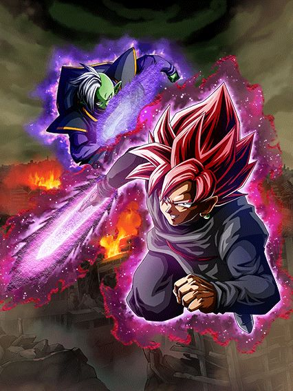
Um tank muito bom.. por 3 turnos?
Esse card é bem básico, eles são um tank e curam vida
Eles buildam praticamente toda a defesa deles tomando 4 ataques, e de fato, buildados a defesa deles é decente sim
A coisa é que eles tem defesa ativa por 3 turnos, o que ajuda muito eles a buildarem, mas pô, 3 turnos é pouco né, podia ser melhor.. mas eles são um bom card, úteis pra ajudar o novo zamasu.
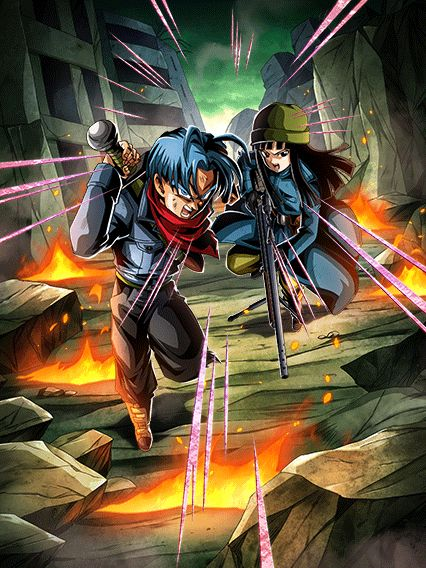
Bons, mas muito restritos.
Precisam de um time full Time Travelers pra ter números decentes de ATK e DEF e ainda sim eles não vão tankar tão fácil assim
Eles são um suporte pra qualquer super class, que é interessante, mas a restrição final mata eles..
50% de chance de desvio, mas só se tiver um inimigo Future Saga, aí não dá cara, literalmente 0 bosses importantes
Se eles fossem menos restritos, seria um card muito bom.
Atualização 2023: Eles são usáveis na red zone dismal future, não que eles tankem nada por lá, mas o desvio ajuda bastante

A parte final do quebra-cabeça.
Eles buildaram hype desde o final do aniversário pra esse momento, lançaram o evento mais difícil do jogo, e ainda fizeram os gammas cards incríveis, eles não podem errar agora né?
Bom…
Ok, vamos imaginar que hipoteticamente vc está responsável por aguardar o lançamento do novíssimo filme de dragon ball e decide que irá apenas lançar cards do filme 6 meses depois de ele lançar, para geral ter tempo de assistir e acumular o hype dos personagens e como eles poderiam estar no jogo, então os cards deverão estar no ápice da perfeição pra valer a pena a espera
Agora que você imaginou a melhor celebração do ano, se pergunte: "Como você poderia arruinar tudo?"
Ultimate Gohan, tmb conhecido como gohan "beast", gohan domesticado, gohan beastless, desapontamento místico, e para os mais chegados, fraudehan. Simplesmente o card que não fez nenhum sentido e quebrou completamente a esperança de todos.
Os devs tinham absolutamente tudo nas mãos para fazer a melhor celebração de todos os tempos e superar o legends de novo por eles terem lançado um gohan beast melhor card do jogo, e de algum jeito eles conseguiram ferrar o único personagem q não parecia ter como zuar.
O gohan começa com uma intro muito braba, com uma ost boa e 100% de ATK e DEF junto com defesa ativa por 3 turnos, igual ao piccolo, mas diferente dele, o gohan por algum motivo tá todo errado, tendo uma mecânica de adicional (adicional esse de 70% que nunca realmente ativa) pior q os LRs do sétimo aniversário, oq não faz sentido sendo q eles foram lançados 11 meses antes dele no jp, além de ser o único card em anos e anos de jogo que sofre por ki. O CARA NUNCA TEM KI
O gohan precisa lançar 5 supers pra buildar, sim, supers, sendo que o gamma 2 lançado meses antes tem a mesma mecânica mas só precisa atacar e isso ele faz super rápido logo no primeiro turno, enquanto o gohan precisa de pelo menos 20 de ki pra lançar o adicional dele, e como já é impossível pegar ki com ele direito e o adicional dele não é um super garantido, fica impossível vc buildar o gohan antes do buff da intro dele acabar
Em resumo, vc deveria ter 3 turnos pro gohan ser bom, mas em 90% das vezes você não vai nem conseguir ver o gohan buildado junto com a intro ativa, oq resume sua gameplay com um card usável por 3 turnos e medíocre pro resto da partida, já que ele buildado sem a intro não ajuda muito e ele vai morrer pra maioria dos bosses, à não ser, é claro, q vc ative a nulificação de supers de ki com 50% de chance de ativar dele 💀
Não era pra ser possível eles lançarem um card tão falho assim depois de terem cozinhado tudo com os gammas e o piccolo. No momento q o filme lançou, o gohan foi destinado a ser o card n.1 do jogo, com counters, dano absurdo, defesa ativa, crítico pra todo lado e o mais importante: A TRANSFORMAÇÃO EM BEAST
Como, COMO É POSSÍVEL lançarem um card do filme sem a transformação final do filme?
Mas não bastou lançarem o beast como uma active, a active ainda é complementada sendo horrível, a animação é facilmente a mais linda do jogo mas não dá dano oq faz pegar a tela de ko do gohan impossível.
Sendo bem honesto, apesar do piccolo ter sido o card top 1 do jogo, essa celebração como um todo teve erros demais e eu não irei elaborar demais no fato do jp ter feito uma campanhazinha de quiz no twitter q resultava na palavra
BEAST e alguns trailers q davam a entender q seria jogável de fato e não foi.
Só deixando bem claro q apesar de muitos memes e ódio, o gohan foi realmente um card decepcionante q foi lançado sem revisão do time já q a única utilidade dele é ser o 200% pra saiyajins híbridos..

Eu devo admitir q essa imagem é sim bem engraçada.
Você chegou ao fim dessa página!
Ou talvez.. eu não tenha terminado ainda? Sei lá
Obrigado por ler tudo, e fica a vontade pra ver outras